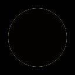
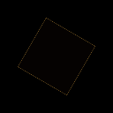
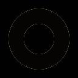
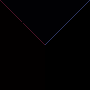
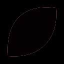
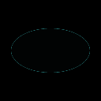
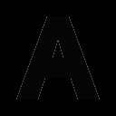
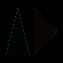
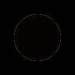

AA fidelity; non-AA coverage; Hausdorff samples ≤0.25px. Process RSS sampled every 2ms. Timings include machine noise. Compare equivalent color counts before interpreting node rankings.
Image
SSIM A → B
ΔE00 A → B
Nodes A → B
Colors A / B
Gaps B
Flags
circle_r50
0.989017 → 0.989017
0.65614 → 0.65614
1312 → 1312
2 / 2
0
Previews: circle_r50 (Hausdorff B Some(0.6395216300602162), corner recall B Some(1.0))
ABB minus input (absolute)

square_rot30
0.990990 → 0.990990
0.36936 → 0.36936
1216 → 1216
2 / 2
0
Previews: square_rot30 (Hausdorff B Some(0.7225111649988343), corner recall B Some(1.0))
ABB minus input (absolute)

star5
0.988173 → 0.988173
0.92822 → 0.92822
1380 → 1380
2 / 2
0
Previews: star5 (Hausdorff B Some(1.0), corner recall B Some(0.9285714285714286))
ABB minus input (absolute)
ring
0.982733 → 0.982733
0.93467 → 0.93467
1712 → 1712
2 / 2
0
Previews: ring (Hausdorff B Some(0.6553834316199145), corner recall B Some(1.0))
ABB minus input (absolute)

concentric
0.976262 → 0.976262
0.87896 → 0.87896
2112 → 2112
4 / 4
0
Previews: concentric (Hausdorff B Some(0.8178202311411062), corner recall B Some(1.0))
ABB minus input (absolute)
junction_t
1.000000 → 1.000000
0.00000 → 0.00000
896 → 896
3 / 3
0
Previews: junction_t (Hausdorff B Some(1.0247593068766007e-13), corner recall B Some(1.0))
ABB minus input (absolute)
junction_y
0.972981 → 0.972981
0.48309 → 0.48309
1148 → 1148
3 / 3
0
Previews: junction_y (Hausdorff B Some(0.7082934042002634), corner recall B Some(1.0))
ABB minus input (absolute)

line_1px
1.000000 → 1.000000
0.00000 → 0.00000
932 → 932
2 / 2
0
Previews: line_1px (Hausdorff B Some(1.0247593068766007e-13), corner recall B Some(1.0))
ABB minus input (absolute)
line_2px
1.000000 → 1.000000
0.00000 → 0.00000
936 → 936
2 / 2
0
Previews: line_2px (Hausdorff B Some(1.0247593068766007e-13), corner recall B Some(1.0))
ABB minus input (absolute)
checker
1.000000 → 1.000000
0.00000 → 0.00000
1280 → 1280
2 / 2
0
Previews: checker (Hausdorff B Some(1.0247593068766007e-13), corner recall B Some(1.0))
ABB minus input (absolute)
diagonal_touch
1.000000 → 1.000000
0.00000 → 0.00000
1024 → 1024
2 / 2
0
Previews: diagonal_touch (Hausdorff B Some(1.0247593068766007e-13), corner recall B Some(1.0))
ABB minus input (absolute)
nested_squares
1.000000 → 1.000000
0.00000 → 0.00000
2240 → 2240
3 / 3
0
Previews: nested_squares (Hausdorff B Some(1.0247593068766007e-13), corner recall B Some(1.0))
ABB minus input (absolute)
bezier_leaf
0.985986 → 0.985986
0.97418 → 0.97418
1300 → 1300
2 / 2
0
Previews: bezier_leaf (Hausdorff B Some(0.7116088997498763), corner recall B Some(1.0))
ABB minus input (absolute)

rounded_rectangle
0.996527 → 0.996527
0.23605 → 0.23605
1216 → 1216
2 / 2
0
Previews: rounded_rectangle (Hausdorff B Some(0.6004716266813168), corner recall B Some(1.0))
ABB minus input (absolute)
ellipse
0.991468 → 0.991468
0.37254 → 0.37254
1136 → 1136
2 / 2
0
Previews: ellipse (Hausdorff B Some(0.6734493136775335), corner recall B Some(1.0))
ABB minus input (absolute)

text_path
0.981995 → 0.981995
0.73073 → 0.73073
1464 → 1464
2 / 2
0
Previews: text_path (Hausdorff B Some(2.0), corner recall B Some(0.9333333333333332))
ABB minus input (absolute)

triangles
0.986807 → 0.986807
0.64423 → 0.64423
1656 → 1656
3 / 3
0
Previews: triangles (Hausdorff B Some(2.0), corner recall B Some(0.9))
ABB minus input (absolute)

circle_noaa
1.000000 → 1.000000
0.00000 → 0.00000
1312 → 1312
2 / 2
0
Previews: circle_noaa (Hausdorff B Some(0.8178202311411062), corner recall B Some(1.0))
ABB minus input (absolute)
multicolor_logo
0.995865 → 0.995865
0.14532 → 0.14532
1816 → 1816
5 / 5
0
Previews: multicolor_logo (Hausdorff B Some(0.6950641325256991), corner recall B Some(1.0))
ABB minus input (absolute)
jpeg_q60
0.976116 → 0.976116
0.87169 → 0.87169
1152 → 1152
2 / 2
0
Previews: jpeg_q60 (Hausdorff B Some(0.7160386286634031), corner recall B Some(1.0))
ABB minus input (absolute)

logo_original_1
0.978511 → 0.978511
4.48759 → 4.48759
1488 → 1488
2 / 2
0
Previews: logo_original_1 (Hausdorff B Some(0.9554613739946972), corner recall B Some(1.0))
ABB minus input (absolute)
logo_original_2
0.978973 → 0.978973
4.52180 → 4.52180
1520 → 1520
2 / 2
0
Previews: logo_original_2 (Hausdorff B Some(0.9554613907173972), corner recall B Some(1.0))
ABB minus input (absolute)
logo_original_3
0.978010 → 0.978010
4.55092 → 4.55092
1500 → 1500
2 / 2
0
Previews: logo_original_3 (Hausdorff B Some(5.370314495239328), corner recall B Some(0.9285714285714286))
ABB minus input (absolute)
logo_original_4
0.976093 → 0.976093
4.57462 → 4.57462
1500 → 1500
2 / 2
0
Previews: logo_original_4 (Hausdorff B Some(8.941565703244608), corner recall B Some(1.0))
ABB minus input (absolute)
logo_original_5
0.978781 → 0.978781
4.64634 → 4.64634
1608 → 1608
2 / 2
0
Previews: logo_original_5 (Hausdorff B Some(1.0), corner recall B Some(1.0))
ABB minus input (absolute)
edge_1x1
1.000000 → 1.000000
0.00000 → 0.00000
4 → 4
1 / 1
0
Previews: edge_1x1 (Hausdorff B None, corner recall B None)
ABB minus input (absolute)
edge_transparent
1.000000 → 1.000000
0.00000 → 0.00000
0 → 0
0 / 0
0
Previews: edge_transparent (Hausdorff B None, corner recall B None)
ABB minus input (absolute)
edge_uniform
1.000000 → 1.000000
0.00000 → 0.00000
64 → 64
1 / 1
0
Previews: edge_uniform (Hausdorff B None, corner recall B None)
ABB minus input (absolute)
edge_1xn
1.000000 → 1.000000
0.00000 → 0.00000
34 → 34
1 / 1
0
Previews: edge_1xn (Hausdorff B None, corner recall B None)